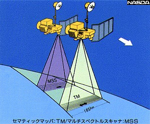
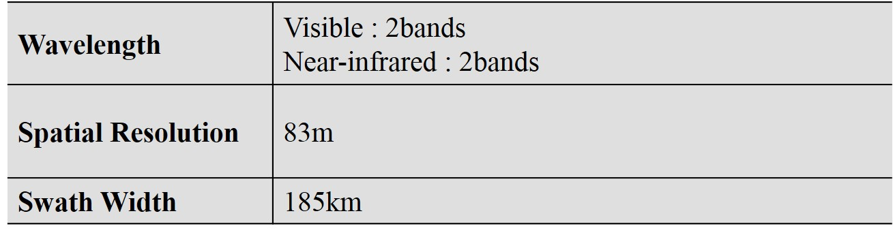
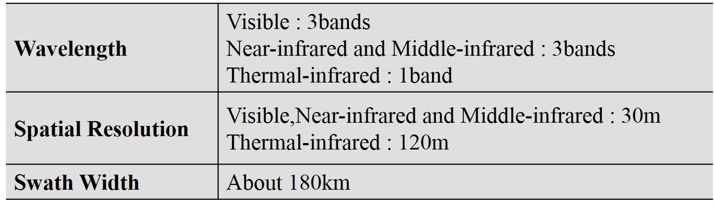
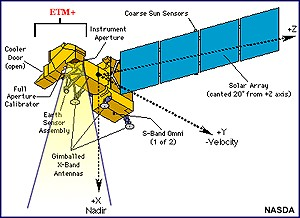
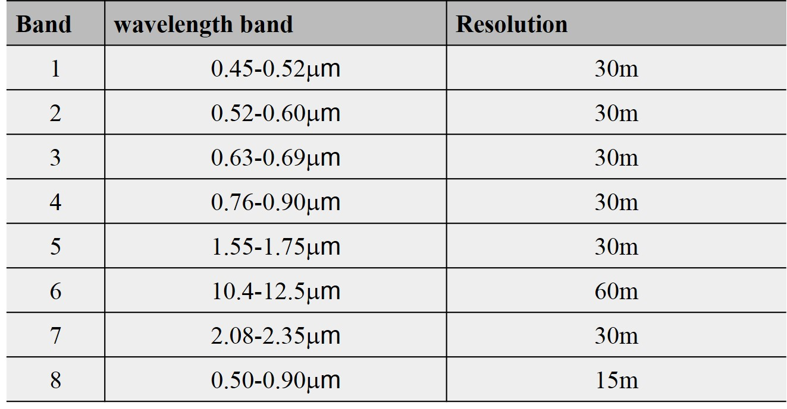

陆地卫星系列
主要的陆地卫星系列
- 陆地卫星（Landsat ）
- SPOT卫星；
- 中国资源一号卫星——中巴地球资源卫星（CBERS）
- 其他陆地卫星
陆地卫星系列---Landsat
*1 : The data reception by NASDA was finished to Jun 30, 2001.
*2 : The data reception by NASDA was finished to Nov 30, 2002.
陆地卫星的运行特点：
- 近极地、近圆形的轨道;
- 轨道高度为700～900 km；
- 运行周期为99～103 min/圈
- 轨道与太阳同步。
陆地卫星Landsat产品主要有：MSS、TM、ETM，属于中高度、长寿命的卫星。


陆地卫星图像举例：MSS
洞庭水情（一）陆地卫星TM图像，波段 5，4，2（红、绿、蓝）接收日期 1995年9月23日
洞庭水情(二) 陆地卫星TM图像，波段 5，4，2（红、绿、蓝） 接收日期 1996年7月2日（汛期）
ETM+
ETM+ ：Enhanced Thematic Mapper Plus.
Overview
The ETM+ is an improved version of the Landsat 4/5 Thematic Mapper (TM) payloads, but still provides data continuity with all prior Landsat missions. Improvements in the instrument include increased spatial resolution of the thermal IR band (Band 6), improvement of the radiometric calibration equipment, and the addition of a panchromatic band (Band 8). Below is a simplified diagram of the ETM+.
Characteristic


{kind=link}
{kind=link}
{kind=link}
{kind=link}
{kind=link}
{kind=link}
{kind=link}
{kind=link}
{kind=link}
{kind=link}
{kind=link}
{kind=link}
{kind=link}
{kind=link}
{kind=link}
{kind=link}
{kind=link}